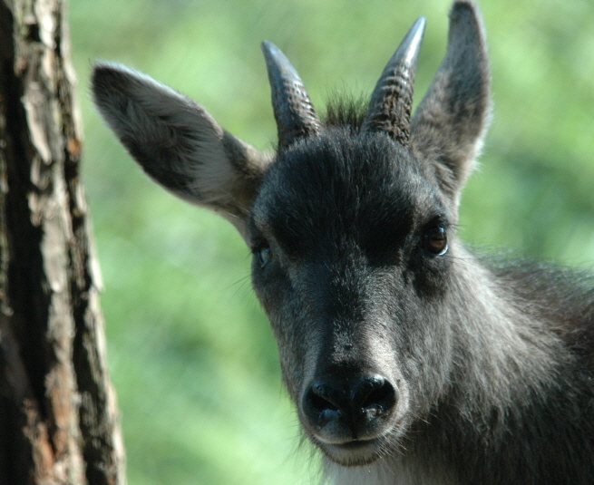

산양

주요특징 및 설명
종명: 산양(山羊, Goral)
학명: Naemorhedus caudatus
생물학적 분류: 소(牛)과 산양속
분포: 한국, 시베리아 동남부
등급: 멸종위기종 Ⅰ급, 천연기념물 제217호
주요 특징
산양은 월악산·설악산·태백산과 같은 기암절벽에서 2~5마리씩
무리를 지어 서식한다. 절벽 위를 잘 걸어다니기 위하여
다리가 굵고, 발굽이 발달해 있다.
겨울철에는 다소 낮은 산림지대로 내려오기도 한다.